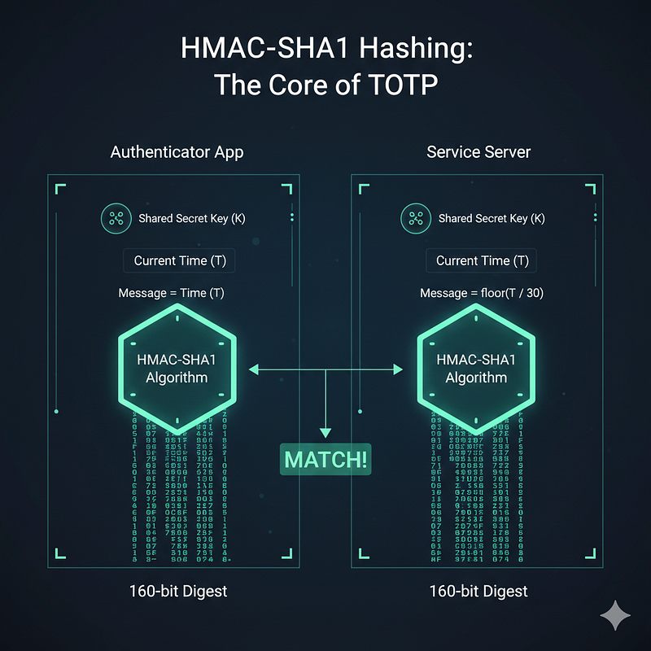
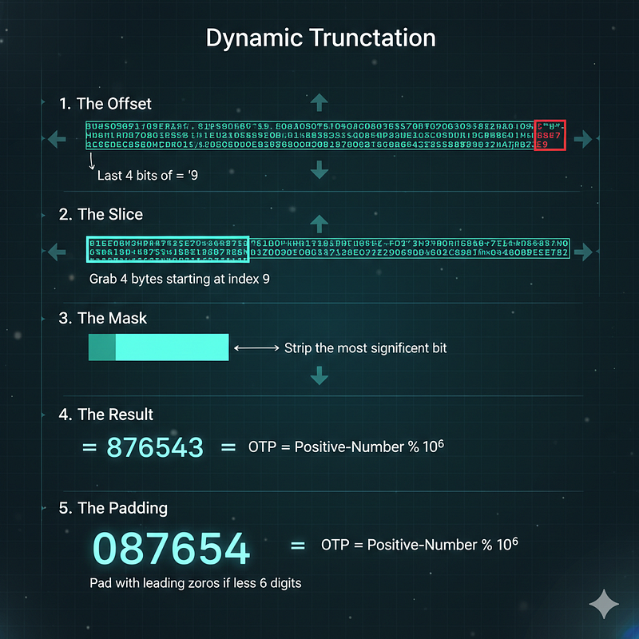

I had been wondering for quite a while how these 2FA authenticator apps work!
I developed a CLI authenticator app to build an intuition of the process. Here is what I learned along the way.
As a user, if I want to enable authenticator-app-based 2FA in a service, I need to register the service in the app by scanning a QR code from the service.
When I am logging into the service, it will ask for a 6-digit OTP from the authenticator app before letting me in.
What's amazing is that these OTPs work even offline. But then how does the service know which OTP will be generated by the authenticator app?
The Hashing of Secrets
The service and the authenticator app share a secret. By scanning the QR code we are copying the secret from the service to the app.
Now, how does one single secret let the app create an infinite stream of valid OTPs for the service?
The answer lies in a simple yet powerful idea: the same input to a hash function always gives the same output. There are many hash functions of varying strengths and properties; they all maintain this principle.
The hash output has a fancy name: digest. We will be using the term quite a few times later.
Authenticator apps follow RFC 6238 and use the cryptographic algorithm HMAC with the SHA1 hash function. Together they are called HMAC-SHA1.
HMAC-SHA1 takes a secret-key and a message and delivers a 160-bit digest. You can already guess where the secret-key comes from — the shared secret between the service and the authenticator app.
The most interesting part is the message, and it makes all the difference.
- The message has to be the same for both the service and the authenticator app, so they both produce exactly the same digest.
- The message content needs to be continuously changing, so we are not stuck with one OTP for life.
Unix timestamp fits the bill perfectly. It is continuously changing and we can assume it is the same for all computers. From this usage of time as the message input, these OTPs get the fancy name TOTP (Time-based OTP).
Running hmac_sha1(secret-key, unix-timestamp) on both sides we get an exactly identical 160-bit digest at any given time.

The Math
Though we need a 6-digit integer instead of a bit stream. Imagine the UX — asking the user to enter 160 bits 😂 to confirm their authenticity.
Here comes math to rescue us from such a torturous situation. The goal is to produce a 6-digit integer from 160 bits.
In simple terms, we take pseudo-randomly selected 4 bytes (32 bits) to get a 6-digit integer from all the bits. The selection of those 4 bytes is random yet deterministic, so both the authenticator and the service know which 32 bits to choose.
"Magic" of Truncation
The algorithm uses a process called Dynamic Truncation to ensure the result is deterministic yet well distributed.
-
The Offset: Look at the very last byte of the 160-bit hash. We take the last 4 bits of that byte. This gives us a number in the range 0–15.
-
The Slice: We use that number as an index. We go to that position in the digest and take out the next 4 consecutive bytes (32 bits).
-
The Mask: We strip the most significant bit (the very first bit) of these 4 bytes. This ensures the number is treated as a positive integer regardless of system architecture.
-
The Result: Now that we have a 32-bit integer, we perform a modulo operation to get our digits:
OTP = Positive-Number % 10⁶
-
The Padding: If the result is fewer than six digits (e.g., 54321), we pad it with a leading zero to get a 6-digit string: 054321.

Fight Against Time
We have a constantly changing 6-digit OTP. But we must solve one issue before celebrating. Time is changing, and so is our Unix timestamp, every second.
With time the message input to HMAC-SHA1 changes and so does the hash digest.
If you are anything like me it takes at least 10 seconds to memorize a code from the authenticator app and enter it into the service login form. Even if we copy-paste, a 1-second interval would be too tight for a human.
The solution is message = floor(unix-timestamp / 30), so it remains the same for every 30 seconds.
After all the shenanigans, we have an OTP with a 30-second expiration. The best part is that no real-time collaboration is needed between the service and the authenticator app.
One Last Boss
One small edge case remains. A phone's clock could be off by 5–6 seconds from the service server's, or there may be network latency. This could cause an OTP mismatch. To make the system robust, services generally consider 3 consecutive OTPs when matching — the previous, current, and next OTP.
All authenticator apps follow the same algorithm described in RFC 6238, so we users have a wide range of options. Google Authenticator, Microsoft Authenticator, Twilio Authy — for the same service, any of them will generate the same OTP at any given time.
A Warning Sign
One thing is clear: the secret shared by QR scanning is the ultimate security token here. Guard it carefully — anyone with access to this secret can generate valid OTPs anytime, anywhere.
At the End
While learning about the process I wrote a Python script that can work as an authenticator app. It was fun to see Google Authenticator and my hand-baked Python script showing the same OTP for a service.
Here is a link to the GitHub gist.